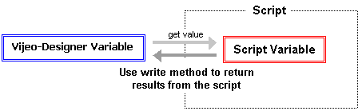

|
|
|
|
|
|
|
|
You can use scripts to change the value of Vijeo-Designer variables by using the write method.

Declare a script variable and initialize its value.
int x=0;
Assign the value from a Vijeo-Designer variable to the script variable, then use it in script operations. In this example, we are dividing x by 2.
For more about operators, see Section 18.3.5, Operators.
int x=0;
x = LineA_Output.getIntValue();
x /= 2;
Call the Vijeo-Designer variable and add the write method.
The parameter in a write method can be a constant or script variable.
For more about the variable write method, see Section 18.9.1.6, Variable Methods.
Be sure to use a semicolon to mark the end of statement.
int x=0;
x = LineA_Output.getIntValue();
x /= 2;
Average.write( x );

When writing values to a BOOL variable, you can use either a boolean or an integer as the parameter in the write method.
 BOOL01.write(false);// Use true or false
BOOL01.write(false);// Use true or false
 BOOL01.write(0); // Use 1 or 0
BOOL01.write(0); // Use 1 or 0
When writing to a String variable, use a local String variable or string (enclosed in double-quotes " ") as the parameter in the write method.
Example:
Writing to a Vijeo-Designer String variable, called String01
In this example, create a local script variable and assign the string "Error has occurred."
String error = "Error has occurred.";
 String01.write(error); // write local String variable
String01.write(error); // write local String variable
 String01.write("ERROR");// write string constant
String01.write("ERROR");// write string constant
 String01.write("ERROR" + error); // write both string constant and local String variable
String01.write("ERROR" + error); // write both string constant and local String variable
 String01.write(Error has occured); // write operation fails. The write parameter is neither a string constant nor a local String variable
String01.write(Error has occured); // write operation fails. The write parameter is neither a string constant nor a local String variable
When writing values to device addresses on equipment, there is a delay from when the command is run and when the change actually takes place on the equipment. To ensure consistent values, we recommend you use a flag or some other mechanism that checks to make sure the data write operation completes successfully before you use the variable.